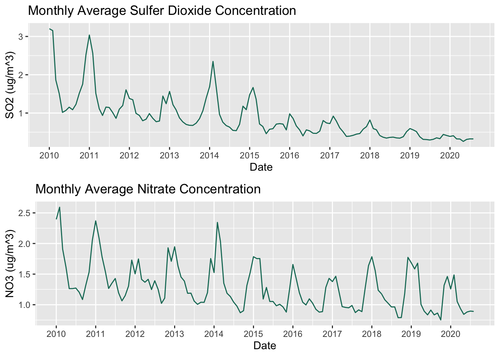
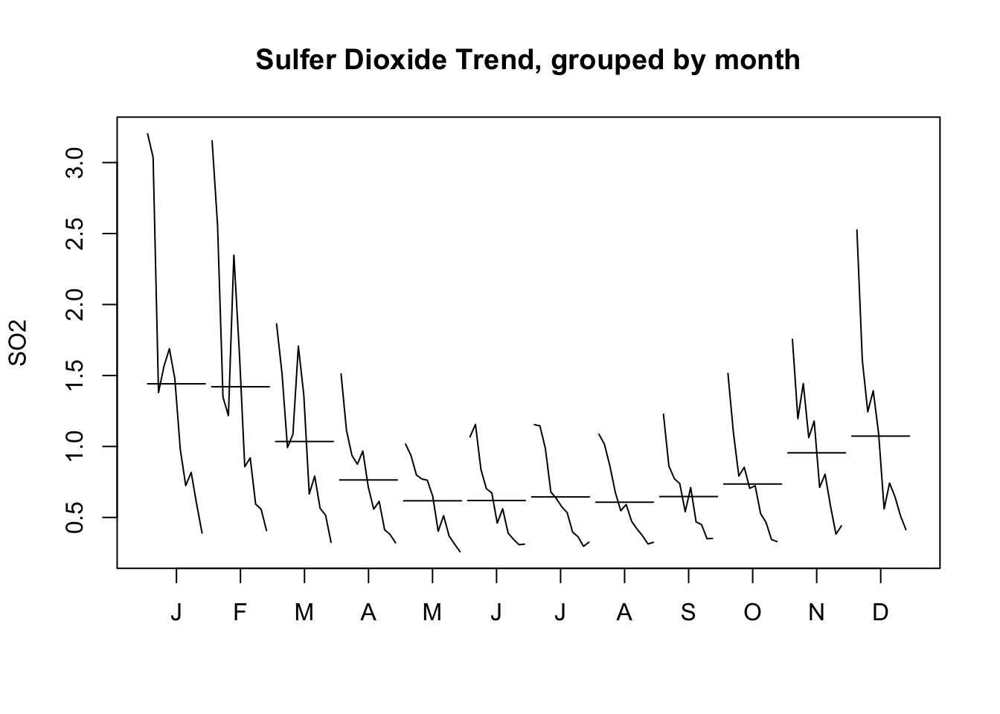

Chapter 4 Missing values
4.1 Data Source 1
After data cleaning in the last section, we ends up with 1337 rows with at least one missing values, 16596 total missing values, and the percentage of missing values over the entire dataset is around 1.78 percent.
After that, we would like to know if all variables have the same percentage of missing values. Therefore, we sum up missing values by column as shown below.
data <- read.csv(file='./data/ProcessedData.csv')
data <- data %>% rename(SO2 = TOTAL_SO2, NO3=TOTAL_NO3)
kable(colSums(is.na(data)))| x | |
|---|---|
| X | 0 |
| SITE_ID | 0 |
| STATE | 0 |
| COUNTY | 0 |
| LATITUDE | 0 |
| LONGITUDE | 0 |
| ELEVATION | 1 |
| TYPE | 53 |
| TSO4 | 1273 |
| TNO3 | 1273 |
| TNH4 | 1273 |
| CA | 1278 |
| MG | 1276 |
| NA. | 1278 |
| K | 1351 |
| CL | 1283 |
| NSO4 | 1275 |
| NHNO3 | 1275 |
| WSO2 | 1299 |
| SO2 | 1287 |
| NO3 | 1265 |
| FLOW_VOLUME | 955 |
| VALID_HOURS | 945 |
| STD2LOCAL_CF | 70 |
| TEMP_SOURCE | 53 |
| date_off | 53 |
| update_date | 53 |
| REGION | 553 |
df <- data %>% select(REGION, SO2, NO3, CA, MG, K, CL)
df_na <- data.frame(percent=round(colSums(is.na(df))/nrow(df)*100))
df_na$keyFeatures <- rownames(df_na)
ggplot(df_na, aes(keyFeatures, percent, fill=percent)) +
geom_col()+
xlab("Features")+
ylab("Percentage") +
ggtitle("Percentage of NAs of Main Features")
Notice that each pollutant concentration variables contain almost the same percentage of missing values, about 3 percents.

The two plots above are consistent to what we suspected, all pollutant concentrations have almost the same missing value pattern. There are 1259 rows missing all five major pollutants and 16 rows missing four major pollutants.
4.2 Data Source 2
Let us then look at a cancer dataset we used to study the relationship between air polluants and lung cancer.
load("./data/DiseaseProcessedData.RData")
data <- temp
data[data=="~"] <- NA
kable(colSums(is.na(data)))| x | |
|---|---|
| STATE | 0 |
| AREA | 0 |
| AGE_ADJUSTED_RATE | 3077 |
| COUNT | 3077 |
| EVENT_TYPE | 0 |
| POPULATION | 0 |
| RACE | 0 |
| SEX | 0 |
| SITE | 0 |
| YEAR | 0 |
| CRUDE_RATE | 3077 |
There are 3077 missing values for three features of the dataset. The following plot provide information on the overall percentage of missing values in each feature. Notice that missing values patterns are uniform across all the entire dataset.
 If we break the missing values down by a categorical variable called EVENT_TYPE, then we can see that there are are more missing values when the EVENT_TYPE is “Mortality” compared to “Incidence”.
